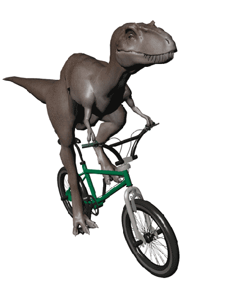
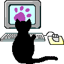
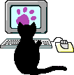

So, who am I?
So, who am I?
👋 Hello! I’m Soumya Kaim, and I like figuring out how brains (and people) work. Currently, I'm a master's student at the University of Groningen (RUG, The Netherlands), applying for exciting PhD positions in neuroscience with a focus on neuroimaging.
🎓 Educational Background
Bachelor of Arts (Honours) in Applied Psychology
University of Delhi (SPMC) – New Delhi, India
Graduated with a CGPA of 7.608 (First Class) and earned the NCC “C” Certificate. My thesis focused on Alexithymia in alcohol dependency addiction, essentially exploring why some people drink their feelings instead of expressing them.
Master of Science in Clinical Psychology
National Forensic Sciences University – Gandhinagar, Gujarat, India
Graduated with a CPI of 8.12 (First Class with Distinction). My thesis examined Lateralization, response inhibition, and impulsivity in response to emotional images and scenes, proving that emotions mess with our brains more than we think—science says so.
Master of Science (Research Master) in Behavioural and Cognitive Neuroscience
University of Groningen (The Netherlands) – Cognition & Cognitive Modelling (BCN, C-track)
Currently pursuing my research master's in neuroscience with a strong emphasis on neuroimaging. My research includes:
Minor Thesis: Socialization and sleep in fruit flies. (Yes, I watched flies sleep for science.)
Major Thesis: Inducing auditory hallucinations using a robot. (Making brains question reality, one experiment at a time.)
Additionally, I have been actively involved as a Program Committee and Student Council Member for my enrolled track.
Next Stop? I don't know yet—stay tuned to find out!
 Research & Publications (Where my nerdiness gets serious) 
Research & Publications (Where my nerdiness gets serious) 
 Skills & Leadership
Skills & Leadership
 Acknowledgements and Credits
Acknowledgements and Credits